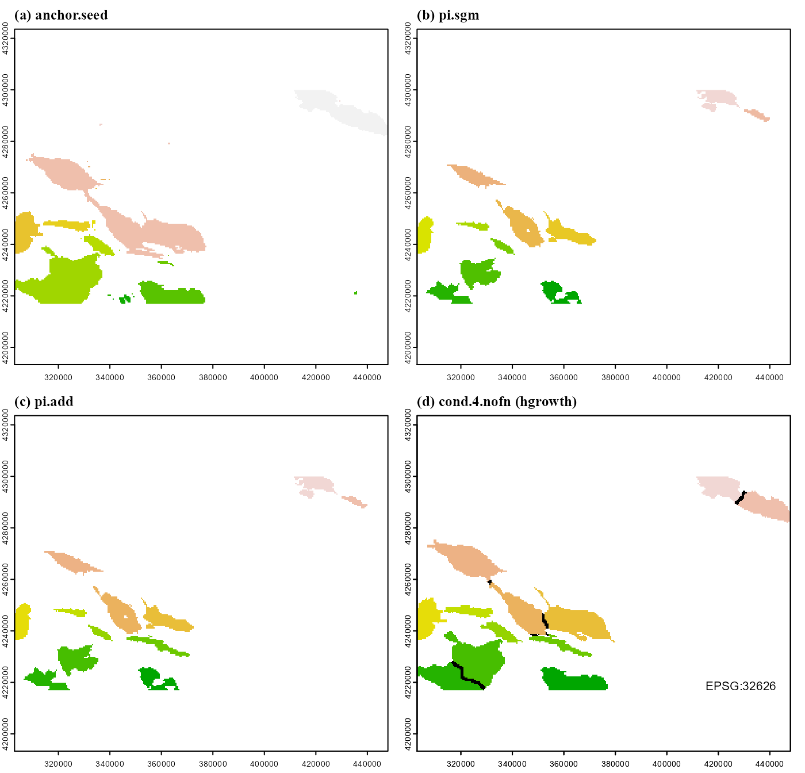

vignettes/articles/scapesClassification_02_4_OBJ.Rmd
scapesClassification_02_4_OBJ.RmdThe relief unit (RU) is composed of prominent seamounts, banks and ridges. In this article individual elements of the relief unit will be classified as distinct raster objects each characterized by a unique ID (Figure 1). The set of all objects will define the relief unit (RU) of our working example.
Libraries and data are loaded and processed as explained in format input data.
# LOAD LIBRARIES
library(scapesClassification)
library(terra)
# LOAD DATA
grd <- list.files(system.file("extdata", package = "scapesClassification"), full.names = T)
grd <- grd[grepl("\\.grd", grd)]
grd <- grd[!grepl("hillshade", grd)]
rstack <- rast(grd)
# COMPUTE ATTRIBUTE TABLE
atbl <- attTbl(rstack, var_names = c("bathymetry", "gmorph", "local_bpi", "regional_bpi", "sd_bat", "slope"))
# COMPUTE NEIGHBORHOOD LIST
nbs <- ngbList(rstack, rNumb = TRUE, attTbl = atbl) # neighbors are identified by their row number in the attribute tableWe will also add to the attribute table the class vector of the island shelf unit (ISU) and the class vector of the peak cells so that they can be used to build classification rules.
# LOAD ISU CLASSIFICATION
ISU <- list.files(system.file("extdata", package = "scapesClassification"), full.names = T,
pattern = "ISU_Cells.RDS")
atbl$ISU <- readRDS(ISU)
atbl$ISU[!is.na(atbl$ISU)] <- 1 # Class 1 identifies all ISU cells
# LOAD PEAK CLASSIFICATION
PKS <- list.files(system.file("extdata", package = "scapesClassification"), full.names = T,
pattern = "PKS_Cells.RDS")
atbl$PKS <- readRDS(PKS)
head(atbl)## Cell bathymetry gmorph local_bpi regional_bpi sd_bat slope ISU PKS
## 1 1 -1718.056 8 -4 129 55.40389 1.410384 NA NA
## 2 2 -1737.816 8 -3 107 49.10466 2.021313 NA NA
## 3 3 -1755.392 6 -1 87 42.76672 2.482018 NA NA
## 4 4 -1787.728 8 -16 52 39.79562 3.149354 NA NA
## 5 5 -1819.800 6 -33 18 43.80128 2.125063 NA NA
## 6 6 -1806.728 8 -7 28 47.81594 1.895863 NA NARelief units will be identified in a sequence of classification steps using raster object manipulation functions and position index functions. In the current example, the tasks fulfilled by these functions are:
anchor.seed: identifies all raster cells (i) on prominent relieves that are (ii) not ISU cells and that are (iii) in continuity with peak cells. It assigns a different ID to each non-continuous group of cell (Figure 1a).
rel.pi: computes the standardized relative position index (rPI) of each raster object.
pi.sgm: fulfills two tasks: (i) segments large raster objects that have negative rPI values or negative local bpi values; (ii) remove small raster objects composed of less than 40 cells (Figure 1b).
pi.add: adds new raster objects composed of cells that have local bpi values greater than 100 that do not have as neighbor any other object (i.e. an object is added only if it is disjoint from other objects) (Figure 1c).
cond.4.nofn: allows a homogeneous growth of raster objects. At turns, each object add contiguous cells having local or regional bpi values greater than 100 (Figure 1d).
Addition information for the above functions can be consulted as function documentation or in the object functions article.
# 1. ANCHOR.SEED
# Tasks:
# Identify raster cells on prominent features in connection with peak cells
# that are not within island shelf units.
atbl$RO <- anchor.seed(atbl, nbs, rNumb = TRUE, silent = TRUE,
class = NULL,
cond.filter = "regional_bpi >= 100 & is.na(ISU)",
cond.seed = "PKS == 1",
cond.growth = "regional_bpi >= 100")
rRO1 <- cv.2.rast(rstack, atbl$RO) # store raster for plotting
# 2. REL.PI
# Tasks:
# standardized relative position index (`rPI`) of each raster object.
atbl$rPI <- rel.pi(atbl, RO="RO", el="bathymetry")
# 3. PI.SGM
# Tasks:
# Segments large raster objects that have negative rPI or negative local bpi;
# Remove raster objects with less than 40 cells.
atbl$RO <- pi.sgm(atbl, nbs, rNumb = TRUE,
RO = "RO",
mainPI = "rPI",
secPI = "local_bpi",
cut.mPI = 0,
cut.sPI = 0,
min.N = 40)
rRO2 <- cv.2.rast(rstack, atbl$RO) # store raster for plotting
# 4. PI.ADD
# Tasks:
# Adds new raster objects composed of cells with local_bpi>100;
# An object is added only if it is disjoint from other objects
# and if it has more than 40 cells.
atbl$RO <- pi.add(atbl, nbs, rNumb = TRUE,
RO = "RO",
mainPI = "local_bpi",
add.mPI = 100,
min.N = 40,
cond.filter = "is.na(ISU)")
rRO3 <- cv.2.rast(rstack, atbl$RO) # store raster for plotting
# 4. COND.4.NOFN (HGROWTH)
# Task:
# Homogeneous growth of raster objects;
# At turns, each raster object adds contiguous cells having
# regional or local BPI values > 100
IDs <- unique(atbl$RO)[!is.na(unique(atbl$RO))]
atbl$RO <- cond.4.nofn(atbl, nbs, rNumb = TRUE, classVector = atbl$RO,
nbs_of = IDs, class = NULL,
cond = "regional_bpi > 100 | local_bpi > 100",
hgrowth = TRUE)
rRO4 <- cv.2.rast(rstack, atbl$RO) # store raster for plotting